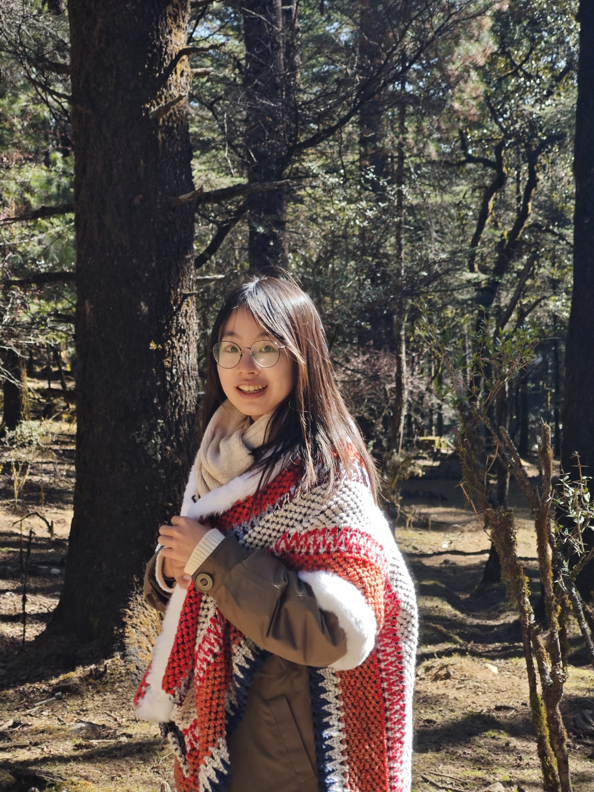

从选品冷启，到板块增长。
独立负责“顺手买”板块，优化选品、价差与冷启策略，协同推进补贴与营销。
79.4W Q2 板块 GMV（元）了解业务实践 ↗你好，我是张林 Lydia
南开金融硕士在读，探索 AI 产品与业务增长。
用数据理解商业，用产品回应问题，
也用内容记录真实的生活。

精选实践 / AI 产品 · 商业增长
参与商品智能审核 Agents 从 0 到 1 落地，将业务规则、检索能力与人工确认组合成可迭代的审核流程。
从审核链路、投放数据到内容创作，
我在不同场景里反复练习同一件事：理解问题，做出改变。
把规则、流程和真实痛点拆清楚，再判断哪些环节适合 Agent，哪些需要确定性规则。技术方案始终服务于业务结果。
在商品审核中，自动化需要边界。用人工标注、漏放率与误杀率检查效果，让 Badcase 成为下一轮迭代的起点。
投放有 ROAS，运营有转化，内容有浏览与赞藏。把数据放回具体场景，理解变化的原因，再用行动验证判断。
从金融分析到产品落地，再到商业增长。
点击章节，展开我的具体工作。
财务、审计与市场
医院机构数据 5K+ / 月 · 审计与财务数据处理
每月整理与透视 5K+ 医院机构数据，汇总泰沃品牌全国准入数据并输出月报；支持耐药共识巡讲、经销商大会和产品商务准入项目，联动销售、医学、商务及外部供应商推动落地。
抽查约 300 张记账及原始凭证，独立完成审计抽样、银行存款和借款审计程序；运用 Excel 处理数十万行财务数据，协助底稿编制与 Clara 程序复核。
累计核查千余份员工报销，日均登记约 100 份订单并核对合同，记录超过 500 份付款申请单，在业务细节中建立数据准确性意识。
阿里巴巴 · 淘天事业部
8 维审核 · 单商品 <30 秒 · 详见上方代表案例
面对多角色串行审核带来的投入与周期问题，参与商品智能审核系统从 0 到 1 的设计与落地。
京东 → 字节跳动
京喜 Q2 板块 GMV 79.4W · TikTok Shop 多市场投放与 AI 提效
参与 US、MX 多市场投放，按爆品、新品、潜爆分层管理 AIGC 素材；搭建自动化数据产出工作流，支持投放监控和策略迭代。协同行业、创意与代理推进新客及营销工具专项。
独立负责“顺手买”板块，优化选品、冷启与价差策略，完成新商从上架到营销的闭环；协同超级补贴项目、站内广告和优惠券运营。
从 0 到 1 的个人 IP，到本地生活的交易转化，
表达与商业，在这里相遇。
独立孵化成长类个人 IP，从选题到创作持续积累；内容单月浏览量突破百万。
从成长话题切入，持续练习如何理解用户关注、组织表达并观察内容反馈。
深耕本地生活探店内容，独立进行内容创作，入选官方活动，连接用户兴趣与线下消费。
研究训练我的分析能力，
竞赛训练我的协作与交付能力。
《服设、传媒类创意人才城市流动研究》大学生创新创业训练计划项目，获上海市级立项。
负责项目构思、研究框架与团队协调，带头研读 50 余篇中外文献并翻译核心内容，比较人才流动研究方法，撰写申报书中的研究思路、技术方法与关键内容。
以注册制改革为背景，考察市场化改革对企业 ESG 绩效的影响。
独立研读中外文献，自学计量方法与统计软件；利用 PSM 匹配控制组并开展多期 DID 实证分析。已完成论文初稿，研究延伸至信息披露及不同情境下的政策反应。
全国高校商业精英挑战赛会计与商业管理案例竞赛，主要负责人。
搜集五年财务数据，结合行业报告与企业年报，分析商业模式、核心产品及财务表现，制定长短期策略；撰写商业计划书、制作路演材料并参与市级及全国决赛答辩。
“安永杯”全国大学生泰德商业案例分析大赛，主要负责人。
围绕能源安全背景，梳理储能产业版图和竞争格局，分析目标公司与可比公司，参与撰写《上能电气深度案例分析》，并围绕中国企业出海开展决赛答辩与路演。
全国大学生数学建模竞赛，第一负责人。
构建不同约束条件下的定日镜场布局模型，参与扩展优化模型设计，与队友编写程序求解最优参数，共同完成定日镜场布局优化论文。
参与上海市哲学社会科学基金项目，从创新投融资视角研究企业竞争力。
检索财经资讯与研究对象官网，收集分析师关注的外生冲击时间及券商次年合并关闭情况，完成数据手工收集、筛选与整理。
金融专业 · 硕士在读
财务管理 · 学士
GPA 4.4 / 5.0 · 综合排名 1 / 167
三次国家奖学金，记录学习中的积累。
也提醒自己，带着这份认真继续向前。
深度参与乡村振兴社会实践，主导问卷设计与调研分析，制作推文、视频、海报等宣传物料，累计浏览量 800+。
作为学生会干事参与落地 3 项大型赛事，负责 2K+ 人次会务执行与全案宣发，推文浏览量达 3K+。
统筹班级易班平台建设与运营，结合热点策划选题并把控内容质量，带领班级连续三次荣获院级一等奖。
去远方，也珍惜身边。
这些瞬间，组成了另一个维度的我。
金融学习让我习惯追问数据与商业逻辑；产品实践让我走近业务流程；内容创作让我直接感受用户的反馈。不同身份，让我看见同一个问题的不同侧面。
我希望把这些视角放在一起，做出能落地、可衡量，也有人愿意使用的产品。